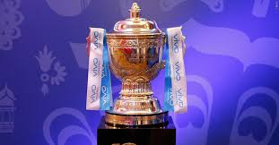

IPL 2020
IPL 2020
BCCI SUSPENDS IPL
2020 TILL 15TH
APRIL,2020

The BOARD OF CONTROL FOR CRICKET IN INDIA(BCCI) has decided to suspend IPL 2020 till 15th April 2020,
as a precautionary measure against the ongoing COVID-19 situation.
The BCCI is concerned and sensitive about all its stakeholder, and public health in general ,and it
is taking all necessary steps to ensure that,all people related to IPL including fans have a safe
cricketing experience.
The BCCI will work closely with the government of India along with the Ministry of Youth Affair and
Sports ,Ministry of Health and Family Welfare and all other relevant Central and State Government
department in this regard.
JAY SHAH
HONORARY SECRETARY